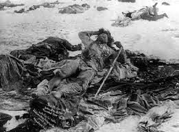

| America's Babi Yar: Soldiers dispose of Sioux bodies in a mass grave at Wounded Knee. |

The
Bible instructs us that a dog will
inevitably return to his vomit, and a sow will eventually resume wallowing in
the mire. In similar fashion, Bryan Fischer of the American Family Association
cannot free himself from the habit of making
incomprehensibly foolish and brazenly bigoted
statements in defense of the quasi-genocidal dispossession of the American
Indians.
“The
native American tribes at the time of the European settlement and founding of
the United States were, virtually without exception, steeped in the basest
forms of superstition, had been guilty of savagery in warfare for hundreds of
years, and practiced the most debased forms of sexuality,” Fischer asserted in a
February 2011 column.
He insists that “the superstition, savagery and sexual immorality of native Americans” left them “morally disqualified from sovereign control of American soil” – which is now properly the possession of Euro-Americans by right of “conquest.”
He insists that “the superstition, savagery and sexual immorality of native Americans” left them “morally disqualified from sovereign control of American soil” – which is now properly the possession of Euro-Americans by right of “conquest.”
Since
“the Europeans proved superior in battle, taking possession of contested lands
through right of conquest,” purchasing Indian lands on mutually beneficial
terms was desirable, but not necessary. Violent conquest was a form of
redemption, Fisher maintains, given the irremediable wickedness of the
red-skinned heathens who populated North America and the virtuousness of the
European settlers who were brought here to “Christianize” the indigenous
population.

Although
it may seem as if the AFA exists for the sole purpose of keeping left-wing
outrage mills well-supplied, the group does have a substantial national
audience. Fischer, who served a short
stint as chaplain to the Idaho State Senate, joined the group in 2009
as a Director of Issues Analysis. He is also a columnist and host of its
national radio program “Focal Point.”
Most
of Fischer’s commentary is an exercise in what might be called co-dependent
pandering: He clearly thrives on
the outrage of the progressive Left, which in turn revels in the outrage that he provides. It sometimes seems as
if Fischer is playing a satirical character, much as comedian Stephen Colbert
played a dim-witted right-wing blatherskite of the same name.
In
any case, Fischer’s blithe endorsement of 19th century ethnic
cleansing left many readers wondering if the author had just been extracted
from a glacier. This prompted an unsuccessful effort
by the AFA to purge the essay from the Web.
During
the past four years, however, this theme has repeatedly bobbed to the surface during
Fischer's monologues
on his AFA-sponsored radio program. The claim that Euro-Americans have been
divinely appointed to have dominion over dusky “savages” appears to be a key
pillar of his worldview.
“Many
of the tribal reservations today are still mired in poverty and alcoholism
because many Native Americans still to this day continue to cling to the
darkness of indigenous superstition instead of coming into the light of
Christianity and assimilating into Christian culture,” Fischer maintains. He singled out for
specific condemnation Indian parents who didn't encourage their children to
become part of “mainstream” American culture, choosing instead to let them
languish in “dependency, poverty, and sterility.”
Proudly
and expansively ignorant of 19th Century U.S. history, Fischer
either doesn’t understand, or doesn’t care, that asserting “sovereign control”
over the Indians required the systematic destruction of family cohesion in
order to make them dependent on the State. Nor does he seem to recognize the
fact that the murderous hypocrisy exhibited by the “Christian” conquerors
alienated Indians from the faith – including more than a few who had initially
received the gospel with gratitude.

Following
the resounding victory at the Battle of Greasy Grass – or what the losers
called Little Bighorn – the vengeful Regime in Washington escalated its
campaign to annihilate the Plains Indians. Sitting Bull, perhaps the most
celebrated of the Lakota chiefs, led his band to relative freedom in Canada in
the hope of preserving their cultural and family life. Owing to Washington's
intimidation tactics, the Canadian government assigned Sitting Bull's people a
sterile and inhospitable tract of land.
Rather
than watching his people starve, Sitting Bull led them back to the U.S. in July
1881. After being imprisoned without cause at Fort Randall, Sitting Bull was
dragged in front of Senator John Logan to endure a demeaning lecture on the
supposed virtues of servility.
"You are not a great chief of this country,” pontificated the Illinois Republican, an exemplar of the “Christian” superiority extolled by Fischer. “You have no following, no power, no control, and no right to any control. You are on an Indian reservation merely at the sufferance of the government. You are fed by the government, clothed by the government, your children are educated by the government, and all that you have and are today is because of the government…. The government feeds and clothes and educates your children now, and desires to teach you to become farmers, and to civilize you, and make you as white men.”
Decades earlier, Sitting
Bull had warned his fellow chiefs that the U.S. Government's
plan to “civilize” them would entail the annihilation of any Indians who
comported themselves as free people. The dishonesty and violence exhibited by
the Regime that conquered Sitting Bull’s people left him permanently alienated
from Christianity, but he did send his children to be educated at a Christian
school.

In 1890, two weeks before the
Seventh Cavalry avenged its defeat at the Battle of Greasy Grass by butchering hundreds
of disarmed Sioux, Sitting
Bull was murdered by tribal police officers whose role in Indian
life was akin to that of the Janissaries in
regimenting Turkey's conquered Christian population under Ottoman Muslim rule.
Sitting Bull had been arrested
because of concerns that the widely respected shaman would join the Ghost Dance movement. This
was a lethal pre-emptive strike by the BIA to prevent the chief from exercising
his freedom of religion. Fischer, who is on record claiming that the First
Amendment does not protect non-Christian religious beliefs, would probably regard the
seizure of Sitting Bull as necessary to discourage “superstition,” and his
violent death an appropriate punishment for resisting arrest.
After Sitting Bull’s assassination,
Dr.
Charles Eastman pointed out, the Regime, acting through corrupt
appointees – many of whom affected clerical titles – “robbed the Indians, then
bullied them, and finally in a panic called for troops to suppress them”
whenever the slightest tremor of resistance appeared. Many of those bureaucrats
affected clerical titles, and were the type of pharisaical functionaries who
couldn’t look upon vice with the smallest degree of allowance – but could
countenance industrialized slaughter as an exercise of righteous dominion.
The December 29, 1890 massacre
at Wounded Knee, which could properly be called the American Babi Yar, closed
the parenthesis on more than a century of perfidy, plunder, and bloodshed
carried out in the name of “civilizing” the American Indians.
Summarizing the views of Bryan
Fischer's spiritual forebears, historian
Roy Harvey Pearce points out that once the Indian had been
dismissed as a subhuman savage, his very right to life was subject to the whim
of his conqueror: “Save him, and you save one of Satan's victims; destroy him,
and you destroy one of Satan's partisans.” In any case, the moral blame for the
bloody deed couldn't be assigned to those who were merely carrying out a divine
commission.
Ironically, one of the first
voices raised in defense of the property rights of the Indians, and to condemn
efforts to dispossess them, was that of Henry Knox, the U.S. Government's first
Secretary of War.
“The Indians, being prior
occupiers, possess the right to the soil,” declared
Knox in 1789. “It cannot be taken away from them unless by
their free consent. To dispossess them in any other principle would be a gross
violation of the fundamental laws of nature and of that distributive justice
which is the glory of a nation.”
Less than a generation later,
troops commanded by Andrew Jackson, Washington's future successor, annihilated
an Indian village in Tallushatchee, Alabama, in retaliation for a Creek attack
on a military installation called Ft. Mims. Under the influence of the
revanchist “Red Sticks” movement, the Creeks assaulted the military outpost in
the hope of turning back settlers who were encroaching on their territory. (In
doing so, incidentally, they also emancipated a
relatively large population of black slaves.)

The siege of Ft. Mims was
brutal. Some of the warriors killed indiscriminately. Others tried to
distinguish between military personnel and non-combatants. One Creek warrior
named Sanota – perhaps
motivated by the desire to repay an earlier act of kindness -- placed
his life at considerable risk to protect Vicey Cornells and
seven of her children, whom he fed and cared for until he could take
them to a white settlement.
No similar scruples were
displayed by Jackson and his men in their retaliatory strike in Tallushatchee.
The village, which had no fortifications, was targeted because of its
vulnerability.
Only handful of men in the
encampment had weapons. They interposed themselves in defense of the women and
children, fighting with foredoomed valor and dying where they stood with their
faces to an enemy that had surrendered itself to demonic bloodlust.
After the defenders had been
killed, historian
Gloria Jahoda recounted in her 1975 book The Trail of Tears, the
attackers continued the siege, gunning down “women and children until the
ground ran vermilion.”
This still wasn't sufficient to
sate the appetite for vengeance. A scout discovered that 45 Creeks – including
women and children – had concealed themselves in a cabin. As if anticipating
the FBI-inflicted slaughter at Waco some 180 years later, Jackson ordered his
men to set fire to the pathetic dwelling and surround it to prevent the victims
from escaping.
For what may have been hours,
the air was clotted with the acrid smell of burning human flesh and rent with
the anguished shrieks of tortured people crying out to the Creator for deliverance.
On the following day, Jackson's
troops discovered a root cellar in the basement of the charred cabin. The
assailants, who had endured a lengthy forced march to reach the village, were famished.
They gorged themselves on potatoes that had been roasted in the fatty runoff
from the previous day's holocaust.
If Bryan Fischer had served as
chaplain to Jackson's saintly band of butchers, he most likely would have said
grace over that cannibalistic meal, thanking God for the “victory” and asking
His benediction on further righteous undertakings of its kind.
Over the next several days,
Jackson's Berserkers – whose ranks included a disgusted and horrified Tennessee
frontiersman named Davy Crockett – exercised the “right of conquest” without
stint or limit, putting scores of houses to the torch and killing hundreds of
helpless people. Overmatched and desperate, the Creek leader, Chief Red Eagle,
offered himself as a ransom for the women and children who had been driven into
the wilderness and faced death in a mop-up operation.

Like many prominent Indian
leaders in the region, Red
Eagle had European ancestry. Born William Weatherford, Red Eagle's
father was an American settler in Georgia, his mother a woman of mixed
Scottish/French/Creek ancestry. His brother, John Weatherford, followed the
“righteous” Euro-American path. Red Eagle may not have read the Bible, but his
self-sacrificing gesture displayed courage, compassion, and charity that were
entirely foreign to the nominally Christian men who had murdered hundreds of
his people.
Andrew Jackson never pretended
to be a man of God. John Chivington, who presided over the November 1864
massacre at Sand Creek, Colorado, was an
ordained Methodist minister. Under his command, more than 150 Cheyenne
Indians – again, most of them women and children – were annihilated by troops
who gave free rein to every imaginable debased impulse.
As with the assault on Tallushatchee,
the American troops carefully selected an outpost that was weak and poorly
defended. Chief Black Kettle, leader of this small band, was a
known peacemaker who – like many others of similar convictions –
appeared to be utterly fearless.
On one occasion, as Cheyenne
warriors faced off against American troops, Black Kettle threw down his weapons
and rode between the opposing forces, crying out that he would be the first to
fall if either side broke the truce. It is a testimony to the respect Black
Kettle had earned from both sides that neither was willing to risk killing him,
and the antagonists stepped back from the brink.
On the morning that
Chivington's raiders appeared outside the camp, Black Kettle raised the U.S.
flag provided to him by Army commanders who promised to protect his band during
their winter encampment.

Neither the flag nor the promises it represented were honored by Chivington and
his Colorado Volunteers. The ensuing
slaughter, wrote Hampton Sides in Blood and Thunder: An Epic of the American
West, “is
now widely regarded as the worst atrocity committed in all the Indian wars.”
At the time, however, Chivington and his men were embraced as heroes by the fine “Christian” people of Denver:
“Chivington returned to Denver in triumph. At a theater his men paraded their war trophies before the cheering crowds: Scalps, fingers, tobacco pouches made from scrotums, purses of stretched pudenda hacked from Cheyenne women. The Denver newspapers praised the Colorado Volunteers for their glorious victory.”
At the time, however, Chivington and his men were embraced as heroes by the fine “Christian” people of Denver:
“Chivington returned to Denver in triumph. At a theater his men paraded their war trophies before the cheering crowds: Scalps, fingers, tobacco pouches made from scrotums, purses of stretched pudenda hacked from Cheyenne women. The Denver newspapers praised the Colorado Volunteers for their glorious victory.”
“Posterity will speak of me as
the great Indian fighter,” boasted Chivington. “I have eclipsed Kit Carson.”
Carson, who fought Indian
warriors in actual military engagements before becoming thoroughly
disillusioned with Manifest Destiny, had nothing but frigid contempt for “that
dirty dog Chivington and his dirty hounds … up at Sand Creek.”
“His men shot down squaws, and
blew the brains out of little innocent children,” Carson complained in a letter
to Army Inspector Col. James Rusling. “You call such soldiers Christians...?
And Indians savages? What do you suppose our Heavenly Father, who made both
them and us, thinks of these things? I tell you what, I don't like a hostile
Redskin any more than you do. And when they are hostile, I've fought 'em, hard
as any man. But I never yet drew bead on a squaw or a papoose, and I despise
the man who would. I've seen as much of 'em as any man livin', and I can't help
but pity 'em, right or wrong. They once owned this country.... But now they own
next door to nothing, and will soon be gone.”
In 1869, as Generals Sherman
and Sheridan busied themselves carrying out what
the former brazenly called the “final solution to the Indian problem,” a
Presidential Commission on Indian Affairs published
a report that contained a bracingly candid indictment of the
Regime’s conduct:
“The history of the Government connections with the Indians is a shameful record of broken treaties and unfulfilled promises. The history of the border white man's connection with the Indians is a sickening record of murder, outrage, robbery, and wrongs committed by the former, as the rule, and occasional savage outbreaks and unspeakably barbarous deeds of retaliation by the latter, as the exception. Taught by the Government that they had rights entitled to respect, when those rights have been assailed by the rapacity of the white man, the arm which should have been raised to protect them has ever been ready to sustain the aggressor. In our Indian wars, almost without exception, the first aggressions have been made by the white man.” (Emphasis added.)
As
the report acknowledged, we shouldn’t fall prey to the
Rousseauist delusion that the Indians were living in prelapsarian innocence and harmony
with nature. Horrible things were done both to and by various Indian tribes.
But as the report also documented, this reflected the fact that then, as now,
there were fortunes to be made by cultivating and exploiting a terrorist
threat.
The Presidential Commission recognized the existence of “a large class of professedly reputable men who use every means in their power to bring on Indian wars for the sake of the profit to be realized from the presence of troops and the expenditure of Government funds in their midst. They proclaim death to the Indians at all times in words and publications, making no distinction between the innocent and the guilty. They irate [sic] the lowest class of men to the perpetration of the darkest deeds against their victims, and as judges and jurymen shield them from the justice due to their crimes. Every crime committed by a white man against an Indian is concealed or palliated. Every offense committed by an Indian against a white man is borne on the wings of the post or the telegraph to the remotest corner of the land, clothed with all the horrors which the reality or the imagination can throw around it.”
The Presidential Commission recognized the existence of “a large class of professedly reputable men who use every means in their power to bring on Indian wars for the sake of the profit to be realized from the presence of troops and the expenditure of Government funds in their midst. They proclaim death to the Indians at all times in words and publications, making no distinction between the innocent and the guilty. They irate [sic] the lowest class of men to the perpetration of the darkest deeds against their victims, and as judges and jurymen shield them from the justice due to their crimes. Every crime committed by a white man against an Indian is concealed or palliated. Every offense committed by an Indian against a white man is borne on the wings of the post or the telegraph to the remotest corner of the land, clothed with all the horrors which the reality or the imagination can throw around it.”
 |
| Chief Bigfoot's frozen remains at Wounded Knee. |

These
official admissions, remember, came in 1869. Over the next two decades the
Regime would wage unremitting warfare against the Indians --reneging on scores
of treaties, confiscating land as elite interests dictated, slaughtering the
buffalo to reduce the Plains Indians to starvation, and mounting punitive
expeditions that gave no quarter to the defenseless.
“They were not subjects of fascism who clubbed
to death infants in the arms of Indian mothers,” writes historian John Upton Terrell in
his study Land Grab. “They were not Nazis
who shot running Indian children to demonstrate their prowess as marksmen. It
was not a dictatorship which condoned the illegal appropriation of territory
awarded to Indians by solemn treaty for `as long as the waters run and the sun
rises.' It was not ... a fuhrer or a duce who herded [Indians] into prison
camps and let them die of malnutrition, cold and disease.... The bugle calls of
American history proclaim not only noble victories and morally justified
accomplishments. They proclaim, as well, base deeds and infamous triumphs.”
Once
Manifest Destiny ran out of room, Washington turned its gaze abroad in search
of new populations of “savages” to Christianize – and new lands over which to
exercise “sovereign control.”
Among the first populations to be blessed by Washington’s armed
benevolence were the Hawaiians, who had already been infiltrated by agents of politically
favored corporate interests. In 1887, a junta of sugar plantation owners,
acting with the full support of Washington, imposed the notorious “Bayonet
Constitution” on what had been an independent, constitutionally limited
Christian monarchy.
The usurpers’ charter “gave
all Americans and Europeans, even non-citizens, the right to vote” while
denying it to the majority population of Asian laborers, recounts historian
Stephen Kinzer in his book Overthrow: America's Century of Regime Change from Hawaii to
Iraq.
Attorney Lorrin Thurston, who concocted the Bayonet Constitution,
was an agent of the cabal that sought to steal the Islands on behalf of corporatist
interests. Thurston appointed himself the Hawaiian government’s interior
minister, in which capacity he arranged the coup of January 1893 that overthrew
the legitimate monarch, Queen Lilioukalani.

As was the case with many of the American Indian leaders who saw
solemn treaties abrogated and their people reduced to servitude, Lilioukalani
was not an adherent of native superstitions; she was Christian believer who was
educated in missionary schools. As the U.S. government consummated the coup by
taking control of Pearl Harbor, the Queen described the event as “a day of
infamy in Hawaiian history.”
The government that stole Hawaii would later plagiarize the
Queen’s lament.
Following the Spanish-American War of 1898, the U.S. government
announced its intention to “uplift and Christianize” the
Filipinos, many of whom were Roman Catholics. In a speech defending this
venture in murderous evangelism, Senator Knute Nelson of Minnesota assured
Filipinos that “We come as ministering angels, not as despots.”
After independence-seeking Filipino partisans displayed their
ingratitude toward their “liberators,” American military commanders appointed
Colonel Jacob Smith, a decorated veteran of Wounded Knee, to bring
his distinctive brand of enlightenment to the archipelago.

“I want no prisoners,” Smith ordered his troops as they descended
on one village. “I wish you to kill and burn. The more you kill and the more
you burn, the better you will please me.” He commanded his troops to obliterate
the village, kill everyone over the age of ten, and reduce the surrounding
countryside into “a howling wilderness.”
Smith was court-martialed after the war – not for mass murder of
civilians, mind you, but for “conduct to the prejudice of good order and
military discipline.” His sentence was to be “admonished by the reviewing
authority” – that is, to receive a brief lecture in the courtroom.
Elsewhere in the Philippines, troops commanded by General Frederick
Funston dragged people indiscriminately from their homes to be detained,
tortured, and executed. In their search for guerrilla leader Emilio Aguinaldo,
Funston's men made extensive use of the same interrogation tactic used decades
later by the Imperial Japanese: The “water cure,” now more
commonly called “waterboarding” or, as Sarah Palin christened
the practice, “terrorist baptisms.”
During a post-war speaking tour, Funston boasted of his exploits,
which included torturing countless Filipinos, committing dozens of summary
executions, and ordering numerous massacres of civilians. Rather than being
prosecuted for war crimes, Funston was given the Medal of Honor. Suffused with
the impudence impunity brings, Funston “suggested that anti-war
protestors be dragged out of their homes and lynched,” observes historian William Loren
Katz.
Then, as now, there was
no shortage of Christian clerics who commended atrocities like those wrought by
Funston and Smith as heroic deeds in a war against a demonic enemy. One man of
the cloth who distinguished himself as a defender of torture was Reverend Homer Stuntz, who published
a monograph entitled “The `Water Cure' from a Missionary Point of View.”
Fischer, who is nothing if not predictable, found Palin’s sadistic aside about waterboarding
to be charming and witty. Since people identified as enemies of the Regime have
no rights, Fischer maintains, torturing them is both necessary and proper, if only
for ritualistic reasons.

As a commentator, Fischer divides most of his time between
itemizing the sexual transgressions of non-believers and promoting open-ended war against the Islamic
world.
Like altogether too many people who make themselves conspicuous by their
piety, he seems more eager to send people to hell than to teach them how to get
to heaven – and his support for torture suggests an indecent desire to get on
with the gratifying business of eternal torment.
Whatever Fischer’s profession of faith and doctrinal views, the
religion he promotes and practices is the worship of the American Imperium.
This is a heresy far deadlier than any of the indigenous forms of superstition
it suppressed.
If you can, please donate to help keep Pro Libertate online. Thank you!
Dum spiro, pugno!
20 comments:
I used to be totally outraged at the actions of the Japanese Army in the "Rape of Nanking" in their war of conquest against China.
Nowadays, while I still remain disgusted at the depravity displayed there, my outrage is mostly with those who tutored the Japanese to build an expansionist empire (to counteract the Russian Empire, and perhaps also the British); that is, the US government under TR and other expansionist Presidents.
All the Japanese did in their Asian conquests (to include their atrocities in Nanking, Korea, and other places) was to emulate their American teachers.
Hey William,
You seem to be missing a portion of this article (or perhaps have a couple extra words) in one place. The paragraph that starts, "The siege of Ft. Mims was brutal..." ends abruptly two words into a sentence.
Excellent write-up, anyway. I'm a big fan of your work.
Adam, thank you so much for your kindness -- and for catching an error that somehow eluded my attention through at least two drafts of this piece. :-)
Never fear the Messiah will fix all wrongs and make a glorious world full of rainbow unicorns and chocolate fountains with each according to his needs:
http://obama-christ.com/
MarkinPNW - the US sent Japan 13,000 tons of scrap iron in 1932 , by 1939 thius had risen to 630,000 tomns + high-octane jet fuel.
Not only that , in 1937 the USS Panay was destroyed and many of her crew killed. Apparently the US was very cross and got $2m [ I think ] compensation. The vessel was clearly marked.
WG - I think the Spreckels family, sugar magnates, were involved in Hawaii. Anyhow a family with some history
cheers
It is a horror to think in today mindset about what happened
on both sides.
I believe you have left out two important points that must
be included.
The first,This attitude of the moral
high ground comes from New England
Puritans.Before the War to Prevent
Southern Independence,the supposed
abolitionist believed they would
bring about a 1000 year heaven
on earth,by killing all southerners
and Indians, and by sending all blacks
back to Africa.Lincoln was the head
of this society,and continued to work
towards that goal during the war.
This is the mindset that prevailed in
the Lincoln administration lead by
the Union Generals.
Second, you forget to mention the
Buffalo Soldiers,blacks, that killed
many native Americans.
I am sure this was an unintended oversight.
History is full of Tragedy,let us hope
we have learned from it.
Every word of this needed to be said
And needs to be read
I gather that most people
in most nations
are ignorant of the ignoble parts
of their own history
Americans, I fear,
exceptionally so
Thanks, as always, Will
-- Robert Heid
Purpose of planet earth --- To reach the ultimate conclusion of force
"Jesus said… It is written by Moses, 'Eye for eye and tooth for tooth.' But a New Command I now give you: Do not use force to overcome evil. If they strike you on the right cheek turn to them the other." Matthew 5:37
"Truly I say to you, that there is no man who has been forced to give up his home, or wife, or brothers, or parents, or children, for the spiritual kingdom of God, who will not receive many times more. It will surely come, in the life that has no end." Luke 18:29
Then in AD 381, King Constantine of Roman, he founded an anti-Christian religion called Roman Catholicism by publishing the very first Bible, the Latin Vulgate Bible which created 32 major contradictions in the New Testament, hypocrisy so perverse that it destroyed the true meaning of Christianity and made it impossible to have faith in the word of God. For example, comes now a true and correct translation of Romans 13:1, directly from the ancient Greek manuscript:
"Every man - government with its deadly force he must be in submission to. Never for an absolute is there force that kills if not under God. The reason being by God it is allowed to prove the corruption of it... Because of this then also taxes pay to government authorities who rule by deadly force. For the Lord allows it to exist to establish something, for their terrorism in this way continues without end."
So today, all published versions of the Bible are identical in thought to the Latin Vulgate, virtually all Christian churches are funded by the rich and virtually all who claim to be Christian will bear the sword for government, thinking they are killing in the name of God for government.
For in owning wealth, you become owned by wealth, as you have no choice but to kill to protect your wealth.
May God's blessing flow to your house sir.
Things that need to be said, to show the perfidy that has inhabited Washington DC since the days of the Whiskey Rebellion... It was not just indians, Hawaiians and Filipinos that the Imperium have ravaged, they began with their own. G. Washington himself being the biggest hypocrite of them all.
If there is one lesson of all time that needs to be understood, is the lesson of Samuel and Saul that was fulfilled by The System of Babylon. That; God did not want us to have Kings. That power corrupts, absolutely, the corollary being; Centralized power corrupts whole nations... paying lip service to God, while worshiping their true 'god'; Mammon.
We shall soon learn this lesson, again. For the hypocrites are naked and the Emperor has no clothes.
And people wonder why I say the Churches are anti-christ... I tell them the Mother of Harlots is Rome, and the Daughters are her spawn, the Protestants. Those who think they are doing God's work, are deceived unto the end.
Only Gnostics know that the revelation of John, was a message and a warning to the Churches, The white horse was the Holy Roman empire, the red horse was the Divine right of Kings, and the Black horse was the scales of democracy and bankers, now, to fall to the pale Green horse of the greens, communism combined with Rome and Islam?, those who worship death openly. We shall see...
The indian and Enoch prophecies slowly manifest, the evil ones destroy the earth, and the Earth Mother is shaking in tears. Now comes the Fire clay tablet, the knowledge of God that must conquer the Mystery of God. The Unified Field of God, the secret of the rocks, that must conquer the statue of Nebuchadnezzar, the Rule of Gold must be conquered by the Golden rule.
Take a look at the hand picked generals that Abe the atheists picked for his mass murdering of civilians. Sherman is a great example to start. As history clearly and positively shows, Sherman liked to attack, townships, villages and cities at or during the fall. The only folks living there for the most part were woman, children and old men. Sherman would order all the grain and livestock his men could not take with them to be destroyed. His orders also included, were to burn down homes and barns. This was done so to starve and freeze those woman, children and old men as winter came on.
After the Civil War was over the taste for human blood by the officers and men in the union army was so demanding that within 90 days once the war ended. They were doing the very same thing to the Plains Indians, ruthless mass murder. That little damning spot of history needed to be noted in another outstanding piece of work Will has put together.
"Any man who thinks he can be happy and prosperous by letting the Government take care of him; better take a closer look at the American Indian. " Henry Ford
So much has been done in the name of Christianity (not Christ...) and in the name of civilization. I have been a fan of your writing for a while, and although I haven't completed this particular article, I do pray that we realize that right now in history we have atrocities being committed by the "religion of peace" against Christians and others. One prays that the jihadis realize that their jihad will be answered (as is inevitable) by a crusade. When it happens, it will be every bit as brutal and bloody as history would lead us to believe...
Will,
What a beautifully written essay. I cannot thank you enough for taking the time to write such an illustrative work on the unspeakable depravity of the US army.
I live near a reservation and have several native friends and I can tell you that the after effects of the Sand Creek, the Cheyenne's struggle, the persecution of the Nez Perce, even the Lewis and Clark expedition are still felt in a very visceral way to the tribal peoples of the North West. The sorrow and pain is still there and the traumatic events and the callous treatment afterwards STILL to this day haunt people and it STILL effects their lives; and I am not talking about depression. Some people still live where there families fled. They can say, 'I live here because my ancestors were butchered there and we escaped to here!' They can say my grandfather was THERE and he told me this or that! Hearing such things makes it feel that much more real.
I would love to see you write sometime about the Pacific NorthWest's trail of tears when the "Flathead" indians--actually call Salish but L&C were stupid--were driven from the bitter root valley towards Arlee and were perpetually lied to and manipulated to what can only be described as a plan to make them completely defenseless and vulnerable to the white people that killed and stole from them without worry of any sort of law applying to them. I only say this because I know someone whose grandfather was there and hearing the story for myself, and so close to home, it haunts me.
It was just a few months back that I had to edit Chivington's wikipedia page so that it properly frames what a monster he was along with all of his military accomplishments. I also added some of his quotes from Angie Debo's book on the History of the Indians and the United States (not the exact name) to give proper perspective about the kind of man he is. The army too; short of abolishing it and either leaving it gone--my preference--or re-founding it. I cannot take anyone seriously who would see pride in the institution even if they have a war fetish.
I love the Knox quote too. Things could have been so much different; I can only imagine the great things the children of these wiped out nations would have added the republic. Seeing them protect their freedom with such passion makes me wonder if we all wouldn't be living with a lot more liberty if these great people hadn't been conquered by the depraved sickos that always seem to be in charge of government.
Thanks again so much. I always tell people that you are the only journalist I know of in the Northwest.
While I am normally repulsed by attempts at "White Guilt", this is classic stuff.
This was the third time Whites were on the North American Continent. The first were the Solutrean Whites, importing high stone technology and covering the land, but being attacked and genocided out by the Asian AmerIndian from over the Pole.
The second was the Viking, now we have found trading posts and whole Viking ships on the Mississippi river, but we know from written history that the Whites were again genocided out and driven from the land.
The third was the crossing of the White in the 1500's, now backed by steel and gunpowder, it was still a near thing. Many attempts to slaughter our people were a near thing.
Thank God we took this land and made it our own and damn right by Right of Conquest.
My comment is that at the bottom of the article it says "Click here to download or listen to this week's Freedom Zealot Podcast." When I did that, I found the podcast for January 3, 2015. It sounded more like a Bill Moyer program. I didn't listen very far into the program because I wanted to hear about the article. Was there a bad link? What exactly is the Freedom Zealot Podcast? Another thing: the section "About Freedom Zealot Podcast January 3 2015 talks about NYPD. Please help me understand about the podcast. Thanks
The Freedom Zealot Podcast is my hour-long weekly commentary that is broadcast on the Liberty News Radio Network and LRN.FM. My blogging and podcasting schedules don't always align, so often the most recent podcast is the previous week's edition.
If you're interested in
this week's program, cut and paste the following link:
http://kiwi6.com/artists/FreedomZealot/freedom-zealot-podcast-january-10-2015
Sorry if off topic:
http://www.alternet.org/civil-liberties/montana-officer-grant-morrison-shoots-and-kills-his-second-unarmed-man-no-charges
American 'exceptionalism' defined in an article.
Bravo! Keep on keeping on. Your words are as the melody to a beautiful song ☺.
Learned of this highly informative article via the Scott Horton show.
Scott is a national treasure.
Post a Comment